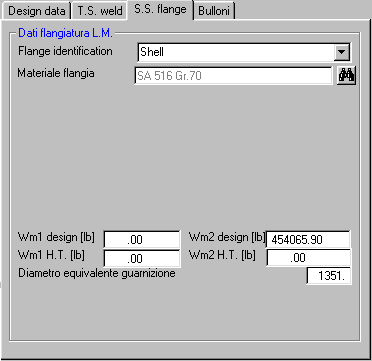
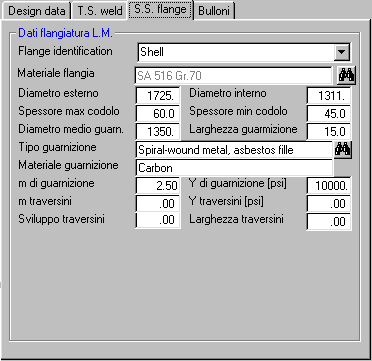

Se non è stata selezionata l'opzione di calcolo automatico del tiro bulloni, l'aspetto di questo pannello è il seguente:

Se invece è stata selezionata l'opzione di calcolo automatico del tiro bulloni, l'aspetto di questo pannello è il seguente:

La casella a discesa viene popolata con le membrature che possono essere candidate al collegamento flangiato con la piastra tubiera. La scelta di una di esse genera un collegamento permanente che trascina tutti i dati della membratura in questione.
Se si digita direttamente una descrizione nella casella, l'eventuale collegamento preesistente viene azzerato, e quindi sarà possibile introdurre localmente i dati relativi alla flangiatura.